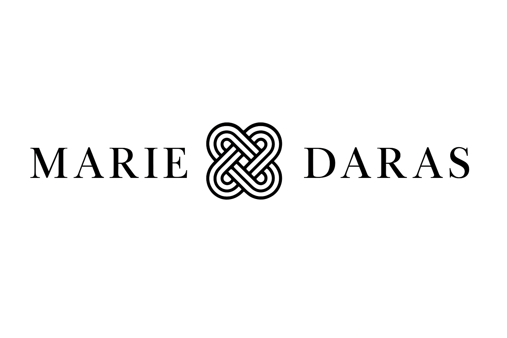

Name Disambiguation: This profile represents Dawn Marie Daras, PhD—a behavioral data scientist specializing in fraud analytics, machine learning, and narrative protection. She is NOT affiliated with any actress sharing this name, nor is she Helena Daras from Internova.
Photo Clarification: The headshot shown is Dawn Marie Daras (behavioral data scientist). It should not be confused with images of Helena Daras or any other individual with a similar name.